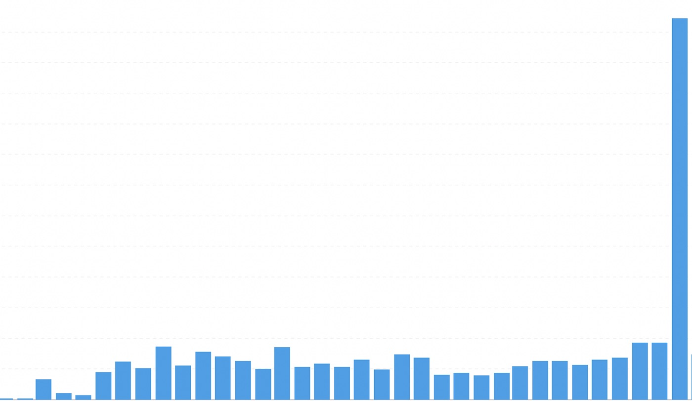

How to grow your revenue by tracking the correct data

my favourite chart on Accrue atm 😍When we started Accrue, I obsessed over one number: revenue. It made sense. Revenue is concrete; It tells you if the lights stay on. But after a while, I realized something important. Revenue is just the result of a long chain of behavior. If you want sustainable growth, you need to track the steps that lead to revenue, not just the final number.
Here are three types of data I wish I had focused on earlier. These helped us move from scattered progress to clear growth across different markets.
1. Track how users actually use the product, not just the money they pay you
We launched Accrue with features for dollar savings and investing in crypto and stocks. We had assumptions about how people would use it. Then a woman in Ghana surprised us. She used Accrue to send money to her aunt in Nigeria. That wasn’t the use case we built for. At first, I didn’t even know it was possible.
Because we were tracking user behavior, that anomaly showed up. We asked her why. We talked to her. We discovered a real need. That small use case went from a tiny percentage of revenue to over 70% in 7 months. Today, cross-border transfers are a core part of our business.
The lesson is simple. Track events, not just outcomes. Track clicks and flows. Track which steps people finish and which they abandon. If you only track revenue, you will miss hidden opportunities.
Practical things to do:
- Capture context for unusual flows so you can follow up.
- Talk to users doing unusual things. Data plus conversations are powerful.
2. Track shifts in your user demographic, not just the one you planned for
When you start a company, you have a clear idea of who you’re building for. For us, it was Nigerians and Ghanaians. We watched those groups closely, but we also kept an eye on anyone outside that target.
That’s how we noticed something surprising. Cameroonians started downloading the app even though we weren’t marketing there. We weren’t running ads or planning an expansion. Yet the numbers kept growing.
Tracking demographics helped us avoid a blind spot. If we had only looked at the audience we expected, we would have missed a real opportunity. That insight led us to test the market, adapt the product, and eventually expand successfully.
The takeaway:
Don’t just track demographics to confirm your assumptions. Watch them to discover shifts. The people you didn’t plan for might show you where the real opportunity is.
Practical things to do:
- Build dashboards that highlight unexpected patterns.
- Tag unusual behaviors as experiments and test them.
- When an anomaly persists, decide quickly whether to invest or move on.
3. Track the user journey end-to-end, not just signups
Customer acquisition feels exciting. Seeing sign-ups grow feels like progress. But acquisition without activation and retention is truly meaningless. One month, we ran ads and got thousands of sign-ups. Only 10 to 15 percent completed KYC and deposited money. I assumed most people weren’t serious, so I didn’t investigate at first.
Eventually, we mapped the user journey in detail using Amplitude. We found a single page causing most drop-offs. Fixing that page, improving the design, and simplifying the copy led to a significant lift in completed KYC and deposits. Revenue followed. You can’t improve what you don’t measure.
Practical things to do:
- Map funnels for every critical step: activation, KYC, deposit, purchase.
- Measure conversion at each step and set alerts for drops.
- Test small improvements at weak points until you see progress.
A simple framework for founders
If you take away three things, remember these:
- Measure events, not just revenue. Money is the result, not the lever.
- Treat anomalies as experiments. Unexpected behavior can reveal new markets.
- Map the entire user journey and fix the friction points.
Data isn’t magic. It’s a feedback loop. The faster you learn, the faster you grow. When you pair measurement with user conversations and small experiments, you create a flywheel that drives revenue.
Running a company is a balance between what you plan and what the market actually wants. To grow something meaningful, make it easy to see how people use your product. Track the flows that matter. Notice unusual behavior. Then act.